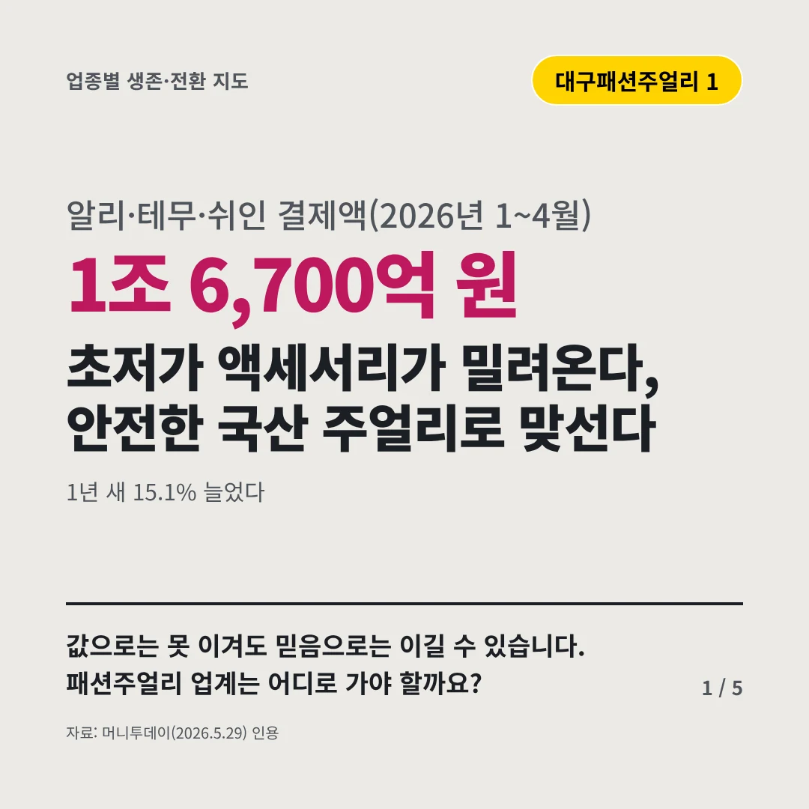
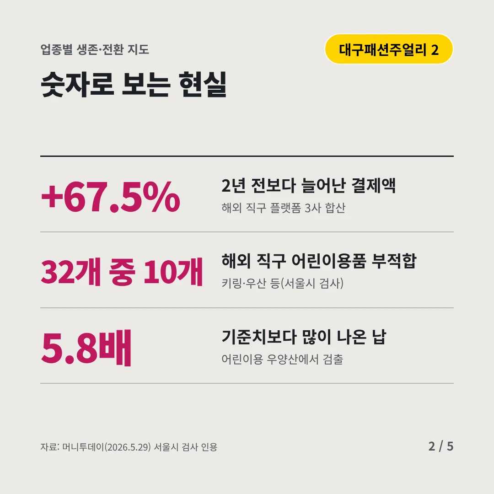
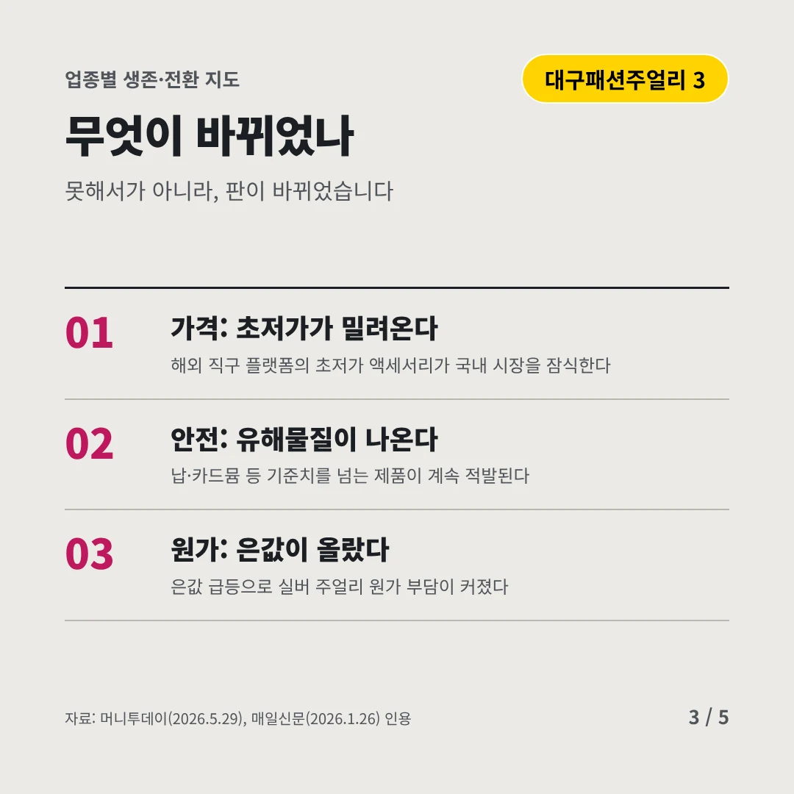
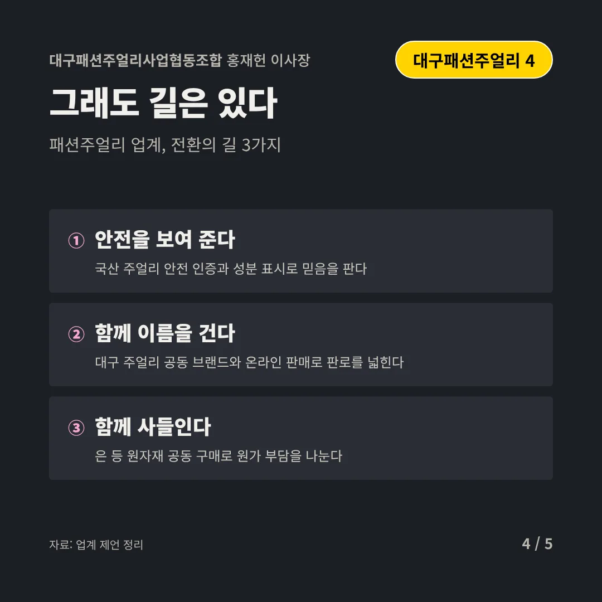
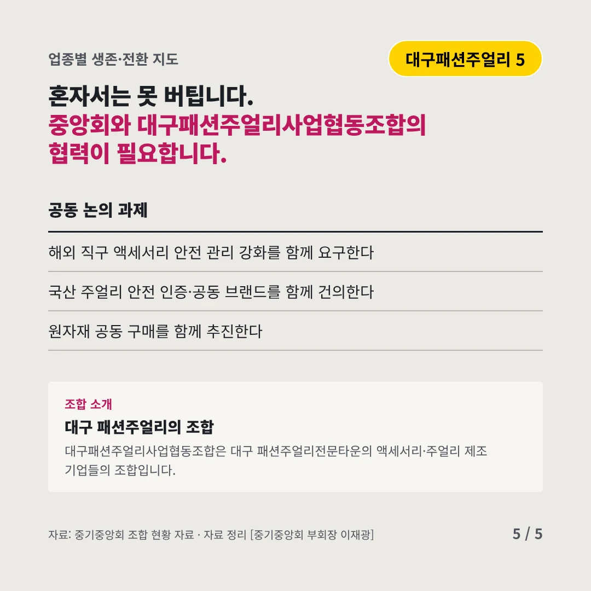
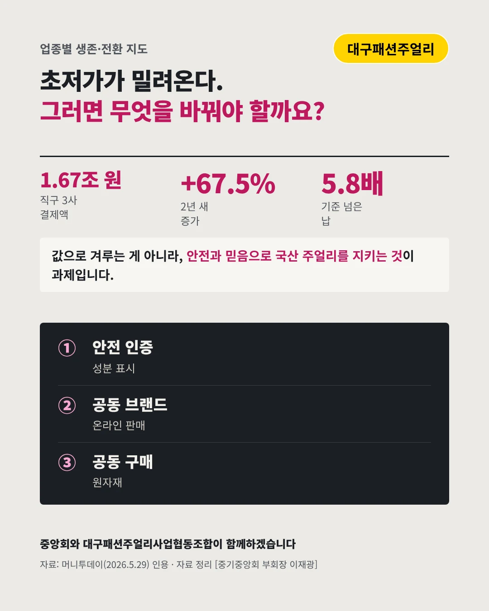

대구패션주얼리사업협동조합홍재헌 이사장
초저가 액세서리가 밀려온다, 안전한 국산 주얼리로 맞선다
1조 6,700억 원 알리·테무·쉬인 결제액(2026년 1~4월)






값으로는 못 이겨도 믿음으로는 이길 수 있습니다. 패션주얼리 업계는 어디로 가야 할까요?
숫자로 보는 현실
- +67.5%2년 전보다 늘어난 결제액해외 직구 플랫폼 3사 합산
- 32개 중 10개해외 직구 어린이용품 부적합키링·우산 등(서울시 검사)
- 5.8배기준치보다 많이 나온 납어린이용 우양산에서 검출
무엇이 바뀌었나
- 가격: 초저가가 밀려온다해외 직구 플랫폼의 초저가 액세서리가 국내 시장을 잠식한다
- 안전: 유해물질이 나온다납·카드뮴 등 기준치를 넘는 제품이 계속 적발된다
- 원가: 은값이 올랐다은값 급등으로 실버 주얼리 원가 부담이 커졌다
그래도 길은 있다
- 안전을 보여 준다국산 주얼리 안전 인증과 성분 표시로 믿음을 판다
- 함께 이름을 건다대구 주얼리 공동 브랜드와 온라인 판매로 판로를 넓힌다
- 함께 사들인다은 등 원자재 공동 구매로 원가 부담을 나눈다
한 장 요약

조합 소개
대구패션주얼리사업협동조합은 대구 패션주얼리전문타운의 액세서리·주얼리 제조 기업들의 조합입니다.
자료: 머니투데이(2026.5.29), 매일신문(2026.1.26)